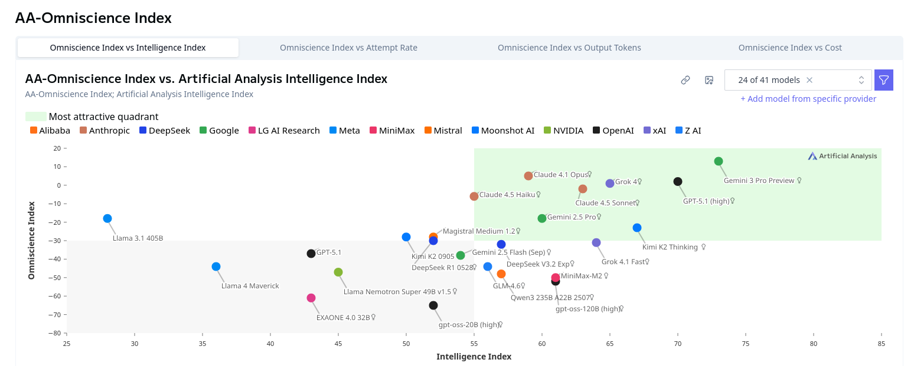
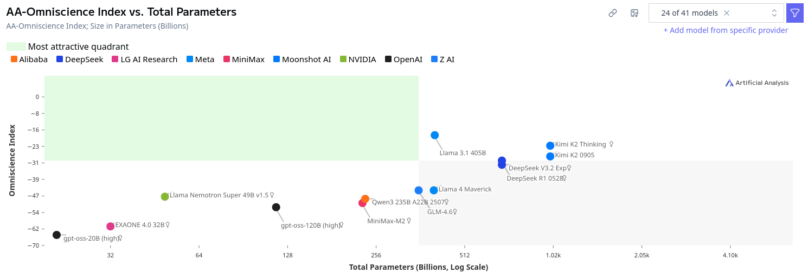
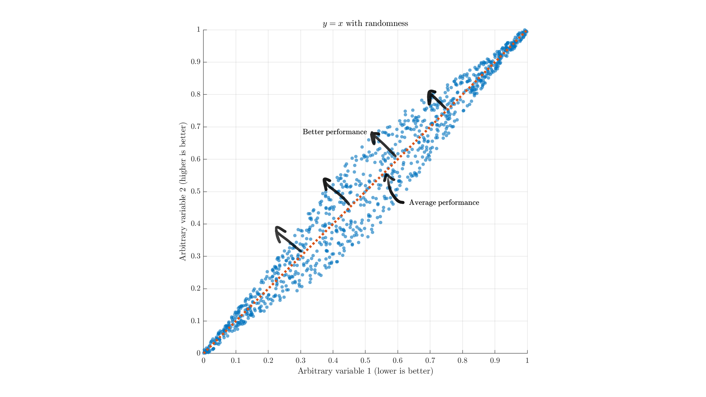
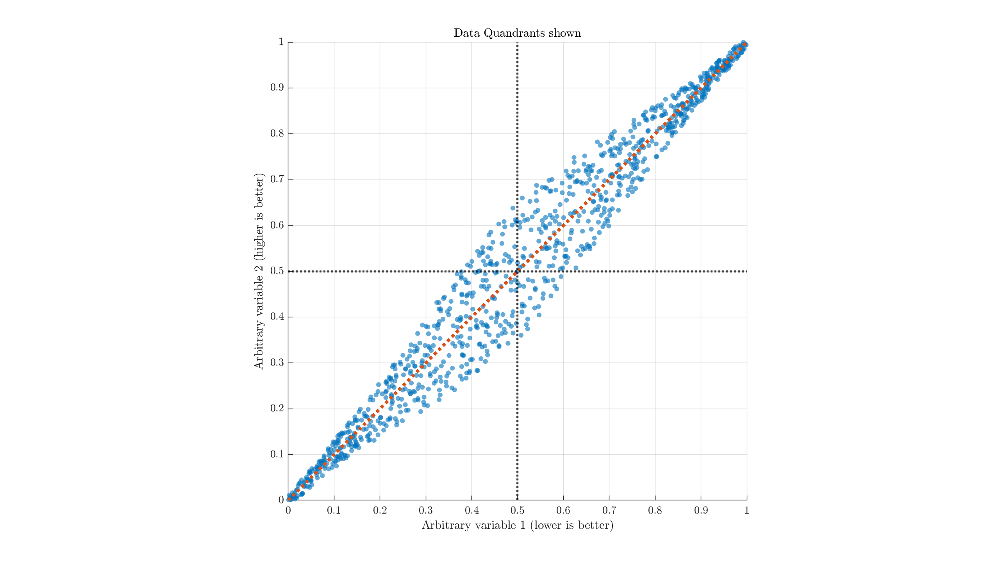
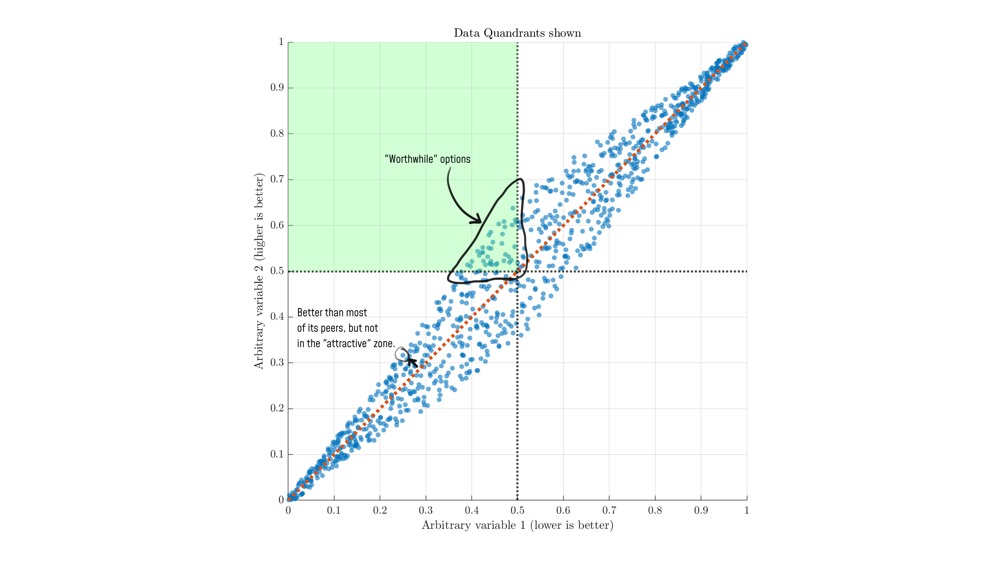
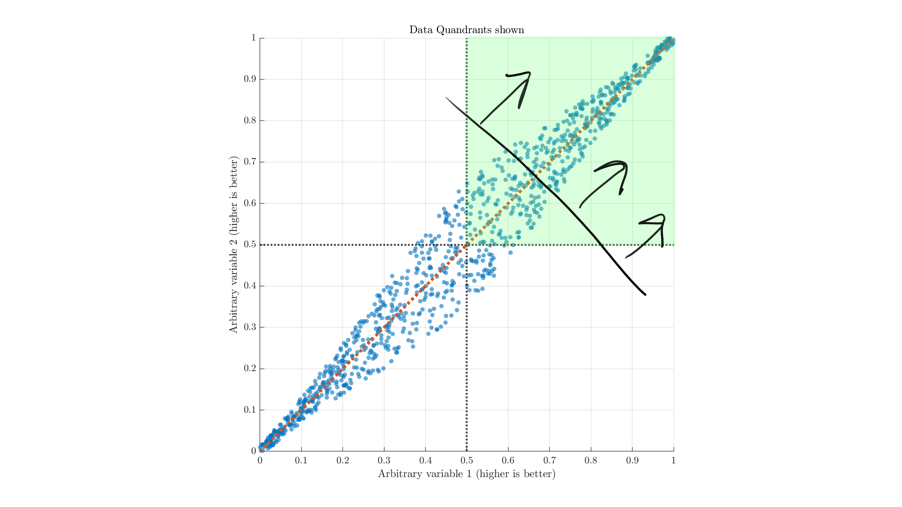
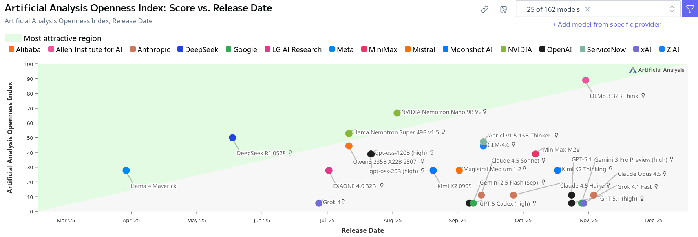

Artificial Analysis' quadrants#
As one point of comparison in my Parlor puzzle LLM testing, I mentioned the Artificial Analysis "Intelligence Index" numbers. It seems to be a rather popular site for comparing LLMs, overall, and they have plenty of numbers to look at. More recently, I was reading their page for the dramatically named Omniscience Index. A potentially interesting idea, but one minor detail in their charts bothered me enough while reading to take a moment and write this.
This doesn't have much to do with the actual usefulness of their metric, to be clear. But it's something that I believe is worth being cautious about, and makes their charts less useful.

See that green rectangle in the top right, indicating the "most attractive quadrant?" It sounds reasonable, right? We want a model that is smart overall, and doesn't lie to us too often. Here's another one with the same visualization:

The best quadrant moves to the left here, because we'd like the model to be efficient (smaller). No model fits the criteria for being "attractive," which seems a bit odd.
Demonstration#
However, in my view, this is a very poor way to indicate good models and is misleading at best. Allow me to demonstrate with an example.
Suppose we had an overall y=x relationship between two variables, with different models varying slightly off the trendline. A plot might look something like this:

Broadly, we want models with less of thing 1 and more of thing 2, so we look to the upper-left compared to the average. Models on this side are, generally, "better than average." A model at (0,1) is theoretically the best case, but this is almost always unrealistic to expect. If we split the image up in to quadrants to match the Artificial Analysis style, I hope the problem becomes evident:

There's no real reason to believe that dividing either metric down the middle is a useful separation, nor that being around there is useful. But highlighting it as green indicates that the top-left quadrant (rather than data to the top-left of other data) is uniquely valuable or interesting.
In the 2nd AA chart, for example, the "most attractive quadrant" includes models approximately below 400B parameters. Why exactly would that be the important threshold? For someone with a single 3090, the "most attractive" size would be more like ~32B and below.

If we're thinking about these as "parameters" and "intelligence", the circled point in the bottom left very well could be a standout performer amongst small models. Similarly, we have many other points to the right that score much higher than the green zone in "intelligence," but appear to be far from the "attractive quadrant."
The real "worthwhile/attractive" options are those on the upper-left edge, across the entire range of the data (the Pareto frontier). Making arbitrary cuts around the mean values is not a good way to examine the data.
In cases where right+up is better, the quadrant approximation might be more reasonable, but I would still recommend viewing it with respect to a normal line like this:

(Referencing off the black line and arrows, rather than the green quadrant. Move its base along the trendline depending on your standards, and maybe rotate depending on which metric you care more about.) These issues hold for nonlinear data relationships.
Conclusion#
The idea of a "most attractive quadrant" is misleading for most types of data and relationships. Better models will be ones that diverge from the overall performance trend in the directions relevant to your usecase, or simply ones that have a lot of the good stuff.
Just as you should be wary of stores advertising their "Best value!!" item, the same can happen in data. The "most attractive" areas labeled on Artificial Analysis scatter plots are not a good indication of actual value. They essentially seem to be carelessly automatically generated and slapped in every scatter plot, regardless of how much value or confusion it adds. You're best off ignoring the highlight and looking closer at the actual numbers.
For a bonus, here's another particularly horrific representation from their "openness" index:

which manages to suggest a locked up model from 2024 is in the "most attractive" region, while a fully open model from 2026 would be sub-par. Nvidia's Nemotron super just manages to edge into the green zone. Luckily for them: if they released just a month later we'd have a problem. Even their usual misleading quadrants would be more appropriate here.